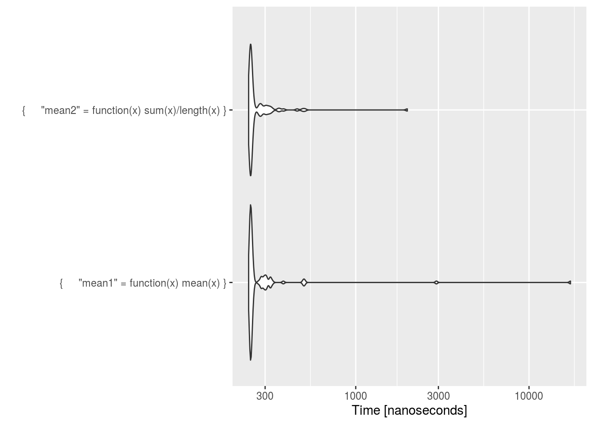

Chapter 2 Understanding R’s Performance
Chapter objectives:
-
Identify when RAM is a limitation in an analysis task.
-
Identify when the processor(s) speed is a limitation in an analysis task.
-
Identify when I/O is a bottleneck in an R task.
-
Find the bottlenecks of your code.
R is a great tool used for statistical analysis and data processing. R programmers who need to process and analyze the ever growing volume of data sometimes find that R’s performance suffers under such heavy loads. Why does R sometimes not perform well, and how can we overcome its performance limitations? We will examine the factors behind R’s performance and offers a variety of techniques to improve the performance of R programs, for example, optimizing memory usage, performing computations in parallel, or even tapping the computing power of external data processing systems.
Before we can find the solutions to R’s performance problems, we need to understand what makes R perform poorly in certain situations. This chapter kicks off our exploration of the high-performance R programming by taking a peek under the hood to understand how R is designed, and how its design can limit the performance of R programs.
We will examine three main constraints faced by any computational task in R:
- CPU
- RAM
- Disk input/output (I/O)
By the end of this chapter, you will have some insights into the bottlenecks that your R programs could run into.
R Workflow
First, let’s see how R programs are executed in a computer. This is a very simplified version of what actually happens, but it suffices for us to understand the performance limitations of R. The following figure illustrates the steps required to execute an R program.
data <- read.csv("data3.csv")
totals <- colSums(data)
write.csv(totals, "totals.csv")knitr::include_graphics("workflow.jpg")
We use the numbering to understand the preceding diagram:
Summary of steps:
1 - When we load and run an R program, the R code is first loaded into RAM.
2 - The R interpreter then translates the R code into machine code and loads the machine code into the CPU.
3 - The CPU executes the program.
4 - The program loads the data to be processed from the hard disk into RAM (read.csv() in the example).
5 - The data is loaded in small chunks into the CPU for processing.
6 - The CPU processes the data one chunk at a time, and exchanges chunks of data with RAM until all the data has been processed (in the example, the CPU executes the instructions of the colSums() function to compute the column sums on the data set).
7 - Sometimes, the processed data is stored back onto the hard drive (write.csv() in the example).
This simple example highlights the possible rate limiting steps that we may slow down our code:
The speed and performance of the CPU determines how quickly computing instructions, such as colSums() in the example, are executed. This includes the interpretation of the R code into the machine code and the actual execution of the machine code to process the data.
The size of RAM available on the computer limits the amount of data that can be processed at any given time. In this example, if the mydata.csv file contains more data than can be held in the RAM, the call to read.csv() will fail.
The speed at which the data can be read from or written to the hard disk (read.csv() and write.csv() in the example), that is, the speed of the disk input/output (I/O) affects how quickly the data can be loaded into the memory and stored back onto the hard disk.
Sometimes, you might encounter these limiting factors one at a time. For example, when a dataset is small enough to be quickly read from the disk and fully stored in the RAM, but the computations performed on it are complex, then only the CPU constraint is encountered. At other times, you might find them occurring together in various combinations. For example, when a dataset is very large, it takes a long time to load it from the disk, only one small chunk of it can be loaded at any given time into the memory, and it takes a long time to perform any computations on it. In either case, these are the symptoms of performance problems. In order to diagnose the problems and find solutions for them, we need to look at what is happening behind the scenes that might be causing these constraints to occur.
2.1 CPU Utilization for R code
R as an interpreted language
R is an interpreted language. This means that every time you execute an R program, the R interpreter interprets and executes the R code on the fly. The following figure illustrates what happens when you run any R code:
knitr::include_graphics("interpreted.jpg")
R first parses your source code into an internal R object representation of all the statements and expressions in your codeand then it evaluates this internal object to execute the code.
This is what makes R such a dynamic and interactive programming language. You can type R statements into the R console and get results immediately because the R interpreter parses and evaluates the code right away. The downside of this approach is that R code runs relatively slow because it is reinterpreted every time you run it, even when it has not changed.
Contrast this with a compiled language such as C or Fortran. When you work with a compiled language, you compile your source code into the machine code before you execute it. This makes compiled languages less interactive because the compilation step can take several minutes for large programs, even when you have made just a tiny change to the code. On the other hand, once the code has been compiled, it runs very quickly on the CPU since it is already in the computer’s native language.
Due to R being an interpreted language, every time you run an R program, the CPU is busy doing two things: interpreting your code and executing the instructions contained in it. Therefore, the CPU’s speed can limit the performance of R programs. We will learn how to overcome CPU limitations in chapters 3.
Single threading
Another way in which R is CPU limited is that, by default, it runs only on a single thread on the CPU. It does not matter if you install R on a powerful server with 64 CPU cores, R will only use one of them. For example, finding the sum of a numeric vector is an operation that can be made to run in parallel in the CPU quite easily. If there are four CPU cores available, each core can be given roughly one quarter of the data to process. Each core computes the subtotal of the chunk of data it is given, and the four subtotals are then added up to find the total sum of the whole dataset. However in R, the sum() function runs serially, processing the entire dataset on one CPU core. In fact, many Big Data operations are of a similar nature to the summation example here, with the same task running independently on many subsets of data. In such a scenario, performing the operation sequentially would be an underuse of today’s mostly parallel computing architectures. In Chapter 8, Multiplying Performance with Parallel Computing, we will learn how to write parallel programs in R to overcome this limitation.
2.2 RAM
All data that is processed in R has to be fully loaded into the RAM. This means that once the data has been loaded, all of it is available for processing by the CPU, which is great for performance. On the other hand, it also means that the maximum size of data that you can process depends on the amount of free RAM available on your system. Remember that not all the RAM on your computer is available to R. The operating system, background processes, and any other applications that are running in the CPU also compete for the RAM. What is available for R to use might be a fraction of the total RAM installed on the system.
On top of that, R also requires free RAM to store the results of its computations. Depending on what kinds of computations you are performing, you might need the available RAM to be twice or even more times as large as the size of your data.
32-bit versions of R are also limited by the amount of RAM they can access. Depending on the operating system, they might be limited to 2 GB to 4 GB of RAM even when there is actually more RAM available. Furthermore, due to memory address limits, data structures in 32-bit versions of R can contain at most 231-1 = 2,147,483,647 elements. Because of these limits, you should use the 64-bit versions of R whenever you can.
Tips and summary:
When we try to load a dataset that is larger than the available the data loads successfully, but once the available RAM is used up, the operating system starts to swap the data in RAM into a swapfile on the hard disk. This is not a feature of R; it depends on the operating system. When this happens, R thinks that all the data has been loaded into the RAM when in fact the operating system is hard at work in the background swapping data between RAM and the swapfile on the disk. When such a situation occurs, we have a disk I/O bottleneck on top of the memory bottleneck. Because disk I/O is so slow (hard drive’s speed is typically measured in milliseconds, while RAM’s speed in nanoseconds), it can cause R to appear as if it is frozen or becomes unresponsive. Of the three performance limitations we looked at, disk I/O often has the largest impact on R’s performance.
A solid understanding of R’s memory management will help you predict how much memory you’ll need for a given task and help you to make the most of the memory you have. It is good to understand the basics of memory management in R, moving from individual objects to functions to larger blocks of code. Along the way, you’ll learn about some common myths, such as that you need to call gc() to free up memory, or that for loops are always slow.
Object size It is important to understand how much memory an object occupies, and uses that as a launching point to improve your understanding of how R objects are stored in memory. These functions tell you how many bytes of memory an object occupies:
There are two ways to do this:
- The built-in object.size() function.
- The pryr::object_size() function. This function is better than the built-in object.size() because it accounts for shared elements within an object and includes the size of environments
library(pryr)
object_size(1:10)## 96 Bobject_size(mean)## 1.18 kBobject_size(mtcars)## 7.21 kBMemory usage and garbage collection
shows you how to use to see
Memory usage and garbage collection introduces you to the mem_used() and mem_change() functions that will help you understand how R allocates and frees memory.
Memory profiling with lineprof shows you how to use the lineprof package to understand how memory is allocated and released in larger code blocks.
Modification in place introduces you to the address() and refs() functions so that you can understand when R modifies in place and when R modifies a copy. Understanding when objects are copied is very important for writing efficient R code.
A microbenchmark is a measurement of the performance of a very small piece of code, something that might take microseconds (µs) or nanoseconds (ns) to run. I’m going to use microbenchmarks to demonstrate the performance of very low-level pieces of R code, which help develop your intuition for how R works.
Memory size
Object size
2.3 Understanding I/O
2.4 Measuring Code’s Performance
Before you can make your code faster, you first need to figure out what’s making it slow. This sounds easy, but it’s not. Even experienced programmers have a hard time identifying bottlenecks in their code. So instead of relying on your intuition, you should profile your code: measure the run-time of each line of code using realistic inputs.
Here we discuss two concepts that are related but serve different purposes in an R code.
Benchmarking. We take two competing pieces of code - could be as simpler as a one liner or as complex as an entire web framework. Then, we put them up against each other (iterations per second). At the end of the task, we come up with a single metric, a score. We use the score to compare the two competing options.
Profiling. Profiling your program is a way to determining which methods are called and how long each method take to complete. This way you can detech which methods are possible bottlenecks. Profiling also tell us a lot of valuable things, like what percentage of CPU time was use where, where memory was allocated and things like that.We should not use profiling to determine performance. Profiling is intented to be used in order to identify the parts of your program which take the most time.
Benchmarking
Although there many approaches we can use for benchmarking, we will discuss two examples.
The easiest way to benchmark a function is to use system.time().
They system.time() function takes an arbitrary R expression as input (can be wrapped in curly braces) and returns the amount of time taken to evaluate the expression. The system.time() function computes the time (in seconds) needed to execute an expression and if there’s an error, gives the time until the error occurred. The function returns an object of class proc_time which contains two useful bits of information:
user time: time charged to the CPU(s) for this expression elapsed time: “wall clock” time, the amount of time that passes for you as you’re sitting there Usually, the user time and elapsed time are relatively close, for straight computing tasks. But there are a few situations where the two can diverge, sometimes dramatically. The elapsed time may be greater than the user time if the CPU spends a lot of time waiting around. This commonly happens if your R expression involes some input or output, which depends on the activity of the file system and the disk (or the Internet, if using a network connection).
The elapsed time may be smaller than the user time if your machine has multiple cores/processors (and is capable of using them). For example, multi-threaded BLAS libraries (vecLib/Accelerate, ATLAS, ACML, MKL) can greatly speed up linear algebra calculations and are commonly installed on even desktop systems these days. Also, parallel processing done via something like the parallell package can make the elapsed time smaller than the user time. When you have multiple processors/cores/machines working in parallel, the amount of time that the collection of CPUs spends working on a problem is the same as with a single CPU, but because they are operating in parallel, there is a savings in elapsed time.
Here’s an example of where the elapsed time is greater than the user time.
system.time(mean1 <- function(x) mean(x))## user system elapsed
## 0 0 0system.time(mean2 <- function(x) sum(x) / length(x))## user system elapsed
## 0 0 0#totals <- colSums(data)
#write.csv(totals, "totals.csv")
#library(rio)
#convert("data3.csv", "data3.Rds")An alternative way of benchmarking, is via the flexible microbenchmark package.
library("microbenchmark")
microbench<-microbenchmark({"mean1" = function(x) mean(x)},
{"mean2" = function(x) sum(x) / length(x)})
microbench## Unit: nanoseconds
## expr min lq mean median uq
## { "mean1" = function(x) mean(x) } 219 225 632.2 229 270.5
## { "mean2" = function(x) sum(x)/length(x) } 214 219 259.5 222 272.0
## max neval
## 14110 100
## 1267 100library(ggplot2)
autoplot(microbench) ## Coordinate system already present. Adding new coordinate system, which will replace the existing one.
The results summarise how long each query took: the minimum (min), lower and upper quariles (lq and uq respectively) and the mean, median and maximum, for each of the number of evaluations (neval, with the default value of 100 used in this case). cld reports the relative rank of each row in the form of ‘compact letter display’: in this case df$name[3] performs best, with a rank of a and a mean time around 25% lower than the other two functions.
Profiling
Benchmarking generally tests the execution time of one function against another. Profiling, on the other hand, is about testing large chunks of code.
- The R Profiler
This is where the profiler comes in handy. The Rprof() function starts the profiler in R. Note that R must be compiled with profiler support (but this is usually the case). In conjunction with Rprof(), we will use the summaryRprof() function which summarizes the output from Rprof() (otherwise it’s not really readable). Note that you should NOT use system.time() and Rprof() together, or you will be sad.
Rprof() keeps track of the function call stack at regularly sampled intervals and tabulates how much time is spent inside each function. By default, the profiler samples the function call stack every 0.02 seconds. This means that if your code runs very quickly (say, under 0.02 seconds), the profiler is not useful. But of your code runs that fast, you probably don’t need the profiler.
The profiler is started by calling the Rprof() function.
The summaryRprof() function tabulates the R profiler output and calculates how much time is spent in which function. There are two methods for normalizing the data.
“by.total” divides the time spend in each function by the total run time.
“by.self” does the same as “by.total” but first subtracts out time spent in functions above the current function in the call stack. I personally find this output to be much more useful.
General architecture of the code profiler
Rprof("path_to_hold_output")
## some code to be profiled
Rprof(NULL)
## some code NOT to be profiled
Rprof("path_to_hold_output", append=TRUE)
## some code to be profiled
Rprof(NULL)
# summarize the results
summaryRprof("path_to_hold_output")## $by.self
## self.time self.pct total.time total.pct
## sample.interval=20000 0.02 100 0.02 100
##
## $by.total
## total.time total.pct self.time self.pct
## sample.interval=20000 0.02 100 0.02 100
##
## $sample.interval
## [1] 0.02
##
## $sampling.time
## [1] 0.02fileName <- "Rprof_example.txt" #filename – A file name where to store results.
Rprof(fileName,append=TRUE)
#Rprof()
data <- read.csv("data3.csv")
totals <- colSums(data)
write.csv(totals, "totals.csv")
Rprof(NULL)
summaryRprof(fileName)## $by.self
## self.time self.pct total.time total.pct
## sample.interval=20000 0.22 73.33 0.22 73.33
## "grep" 0.02 6.67 0.02 6.67
## "gsub" 0.02 6.67 0.02 6.67
## "strsplit" 0.02 6.67 0.02 6.67
## "substr" 0.02 6.67 0.02 6.67
##
## $by.total
## total.time total.pct self.time self.pct
## sample.interval=20000 0.22 73.33 0.22 73.33
## "<Anonymous>" 0.08 26.67 0.00 0.00
## "knitr::knit_params" 0.04 13.33 0.00 0.00
## "split_lines" 0.04 13.33 0.00 0.00
## "grep" 0.02 6.67 0.02 6.67
## "gsub" 0.02 6.67 0.02 6.67
## "strsplit" 0.02 6.67 0.02 6.67
## "substr" 0.02 6.67 0.02 6.67
## "capture.output" 0.02 6.67 0.00 0.00
## "do.call" 0.02 6.67 0.00 0.00
## "doTryCatch" 0.02 6.67 0.00 0.00
## "eval" 0.02 6.67 0.00 0.00
## "evalVis" 0.02 6.67 0.00 0.00
## "NextMethod" 0.02 6.67 0.00 0.00
## ".rs.valueContents" 0.02 6.67 0.00 0.00
## ".rs.valueFromStr" 0.02 6.67 0.00 0.00
## ".rs.withTimeLimit" 0.02 6.67 0.00 0.00
## "str" 0.02 6.67 0.00 0.00
## "str.data.frame" 0.02 6.67 0.00 0.00
## "str.default" 0.02 6.67 0.00 0.00
## "strSub" 0.02 6.67 0.00 0.00
## "try" 0.02 6.67 0.00 0.00
## "tryCatch" 0.02 6.67 0.00 0.00
## "tryCatchList" 0.02 6.67 0.00 0.00
## "tryCatchOne" 0.02 6.67 0.00 0.00
## "unlist" 0.02 6.67 0.00 0.00
## "withVisible" 0.02 6.67 0.00 0.00
##
## $sample.interval
## [1] 0.02
##
## $sampling.time
## [1] 0.3summaryRprof(fileName)$by.total## total.time total.pct self.time self.pct
## sample.interval=20000 0.22 73.33 0.22 73.33
## "<Anonymous>" 0.08 26.67 0.00 0.00
## "knitr::knit_params" 0.04 13.33 0.00 0.00
## "split_lines" 0.04 13.33 0.00 0.00
## "grep" 0.02 6.67 0.02 6.67
## "gsub" 0.02 6.67 0.02 6.67
## "strsplit" 0.02 6.67 0.02 6.67
## "substr" 0.02 6.67 0.02 6.67
## "capture.output" 0.02 6.67 0.00 0.00
## "do.call" 0.02 6.67 0.00 0.00
## "doTryCatch" 0.02 6.67 0.00 0.00
## "eval" 0.02 6.67 0.00 0.00
## "evalVis" 0.02 6.67 0.00 0.00
## "NextMethod" 0.02 6.67 0.00 0.00
## ".rs.valueContents" 0.02 6.67 0.00 0.00
## ".rs.valueFromStr" 0.02 6.67 0.00 0.00
## ".rs.withTimeLimit" 0.02 6.67 0.00 0.00
## "str" 0.02 6.67 0.00 0.00
## "str.data.frame" 0.02 6.67 0.00 0.00
## "str.default" 0.02 6.67 0.00 0.00
## "strSub" 0.02 6.67 0.00 0.00
## "try" 0.02 6.67 0.00 0.00
## "tryCatch" 0.02 6.67 0.00 0.00
## "tryCatchList" 0.02 6.67 0.00 0.00
## "tryCatchOne" 0.02 6.67 0.00 0.00
## "unlist" 0.02 6.67 0.00 0.00
## "withVisible" 0.02 6.67 0.00 0.00summaryRprof(fileName)$by.self## self.time self.pct total.time total.pct
## sample.interval=20000 0.22 73.33 0.22 73.33
## "grep" 0.02 6.67 0.02 6.67
## "gsub" 0.02 6.67 0.02 6.67
## "strsplit" 0.02 6.67 0.02 6.67
## "substr" 0.02 6.67 0.02 6.67Although the Rprof() function is found in the base. There are many other packages that maybe used for code profiling. It is advisable that you familiarize themselves with these packages.